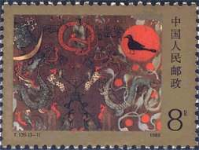

A: about the stamps of this set
(1)T135
No. of Stamps in Set: 3
Denomination: 0.58 Yuan
Size of Design: (3-1) 40*30mm; (3-2)(3-3) 30*40mm
Perforation: (3-1) 11*11.5; (3-2)(3-3) 11.5*11
Sheet Composition: 40
Printing Process: Color Photogravure
Designer: Wang Huming
Time of Issue: Mar.25,1989
3-1 In the Heaven, 8 fen
3-2 On the Earth, 20 fen
3-3 In the Nether world, 30 fen
(2)T135m--[Miniature Sheet]
Denomination: 5 Yuan
Printing Process of Miniature Sheet: Offset
Peripheral Size of Miniature Sheet: 90*165mm
Size of Miniature Sheet: 60*120mm
B: Background:
Mawangdui is located at Wulipai in the outskirt of Changsha, Hunan, about eight kilometers away from downtown of the city.
Buried here were Dai Marquis Licang, his wife and son of the early West Han Dynasty (from 206 B.C. to A.D. 24). From early 1972 to early 1974,
Chinese archaeologists carried out scientific excavation of Han Tombs No.1, 2 and 3, and unearthed several thousand
treasured cultural relics. It was a rare archaeological find in terms of the variety of the relics and their good conditions,
and provided a solid material proof for the research of social, political, economic and cultural development of the early Han
Dynasty. The polychrome painting on silk discovered in Han Tomb No.1, with its substantial content, bright colours and
unique way of expression, possesses great research and appreciation value in the art history of China.
|

|